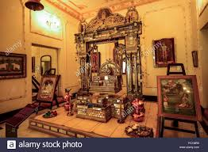

Timings 10:00 am to 4:30 pm; closed on certain public holidays
Year of Construction 1874
Jai Vilas Palace, Gwalior: An Opulent Palace cum MuseumFamed for its colossal Durbar Hall, the Jai Vilas Palace aka the Jai Vilas Mahal in Gwalior stands as an ode to opulence. This 19th-century palace is a spectacular royal residence cum museum that boasts of splendid architecture and a grand collection of curios, some of which belong to the times of Mughal Emperors and the legendary queen Lakshmibai of Jhansi. This extravagant edifice built on a grand scale should be on your itinerary when you step out of your hotels in Gwalior to explore the city.Interested to know more about this heritage palace? Here’s everything about the Jai Vilas Palace in Gwalior, including its history, architecture, timings, entry fee, other interesting and lesser-known facts.
